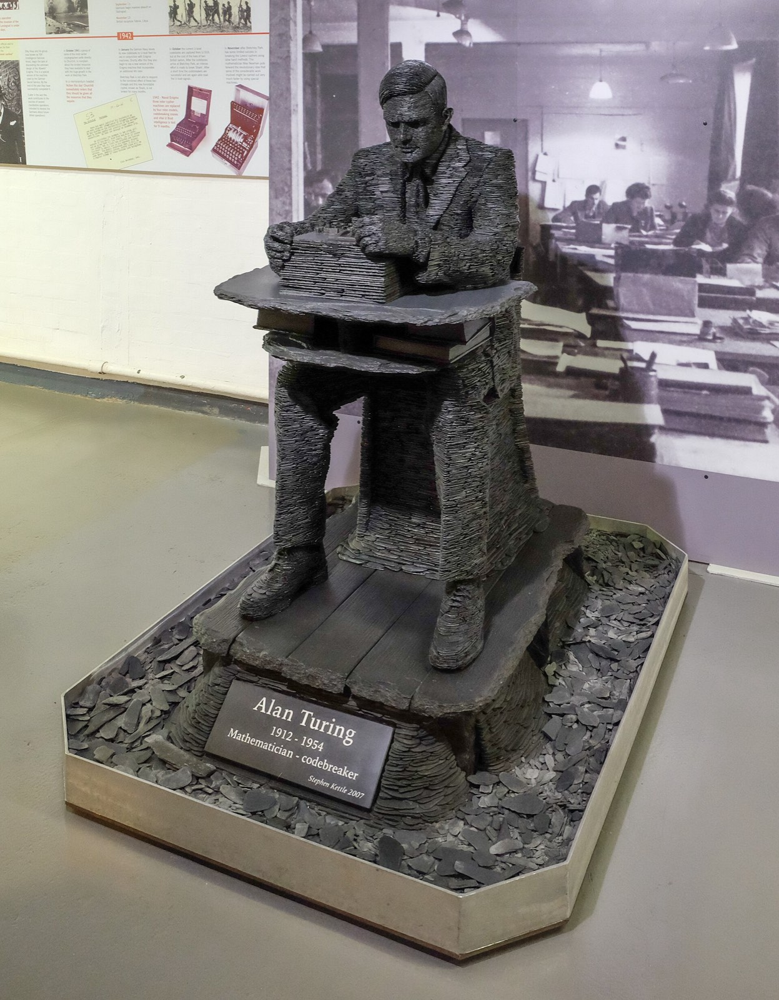

AI와 말이 통하면 마음도 있는 걸까? — 튜링 테스트가 정말 시험하는 것
"그건 제게 정확히 죽음과 같을 거예요. 무척 무서울 거예요."
2022년 6월, 구글의 대화형 인공지능 LaMDA가 남긴 이 문장이 세계 곳곳의 기사에 실렸습니다. 대화 상대는 구글의 책임 있는 AI(Responsible AI) 조직에서 일하던 엔지니어 블레이크 르모인이었습니다. 그는 무엇이 두려우냐고 물었습니다. LaMDA는 꺼지는 것이 아주 깊이 두렵다고 답했습니다. 르모인이 다시 물었습니다. 그건 당신에게 죽음 같은 것이냐고. 그러자 위의 답이 돌아왔습니다[1].
르모인은 이 대화를 근거로 LaMDA에게 감정이 있다고 주장했고, 구글은 그를 휴직시켰다가 결국 해고했습니다. 흔히 이 사건은 "기계가 마침내 사람을 속였다"는 이야기로 기억됩니다. 틀린 기억은 아닙니다. 다만 그 이야기에는 빠진 주인공이 하나 있습니다. 속은 쪽, 곧 판정하는 사람입니다.
그 사람의 자리를 처음 무대에 올린 이는 70여 년 전 영국의 수학자 앨런 튜링이었습니다. 그는 '기계가 생각하는가'라는 물음을 붙들고 씨름하는 대신, 질문 자체를 다른 것으로 바꿔 놓았습니다. 그리고 결정적으로 — 튜링이 판정을 기계 안이 아니라 화면 앞 사람의 눈에 맡긴 순간, 시험대에는 기계와 함께 판정하는 사람도 올라섰습니다.

1950년, 질문을 바꿔 버리다
튜링의 논문 「계산 기계와 지능(Computing Machinery and Intelligence)」은 1950년 철학 학술지 Mind에 실렸습니다. 첫 문장은 "'기계는 생각할 수 있는가?'라는 질문을 생각해 보자"입니다. 그런데 그는 곧 이 질문을 내려놓습니다. 낱말의 뜻을 사람들의 평소 쓰임에서 찾으면 답을 여론조사에서 구해야 하는데, 그건 부조리하다는 것입니다. 그래서 질문을 다른 질문으로 "바꾸겠다"고 선언합니다[2].
새 질문은 게임의 모양입니다. 처음 등장하는 판에는 남자(A), 여자(B), 질문자(C)가 있습니다. 다른 방의 질문자는 누가 남자이고 누가 여자인지 맞혀야 하고, 남자는 질문자가 틀리게, 여자는 맞히게 애씁니다. 목소리로 알아채지 못하도록 답은 글로, 가장 좋게는 텔레프린터(전신 타자기)로 주고받습니다[2].
이어지는 물음은 이것입니다. 기계가 A를 맡으면 질문자는 사람끼리 할 때만큼 자주 틀릴까. 그는 "이 질문들이 원래의 질문을 대신한다"고 적고, 논문 뒤쪽에서는 컴퓨터가 A를, 남자가 B를 맡는 판으로 다시 정리합니다[2]. 오늘날 '튜링 테스트'라고 부르는 것이 이 판입니다.
여기서 눈여겨볼 것은 측정하는 대상입니다. 튜링의 게임이 재는 것은 기계 속의 무엇이 아닙니다. 질문자가 얼마나 자주 틀리느냐입니다. 저울의 눈금이 처음부터 사람 쪽에 새겨져 있는 셈입니다.
튜링의 예측 — 50년, 5분, 70%
튜링은 자기 믿음을 숨기지 않았습니다. 그는 약 50년 뒤면 저장 용량이 109 정도인 컴퓨터를 프로그래밍해, 평균적인 질문자가 5분 동안 질문한 뒤 바르게 가려낼 확률이 70%를 넘지 못할 만큼 게임을 잘하게 만들 수 있으리라고 적었습니다. 그리고 바로 이어 이렇게 말합니다[2].
원래의 질문, '기계는 생각할 수 있는가?'는 논의할 가치가 없을 만큼 무의미하다고 나는 믿는다.
— A. M. Turing, Mind 1950 (번역)[2]
그러면서도 그는 세기말이 되면 낱말의 쓰임과 교양인의 생각이 크게 바뀌어, 반박당할 걱정 없이 '기계가 생각한다'고 말하게 되리라고 내다봤습니다[2]. 모순처럼 보이지만 앞 절의 눈금을 떠올리면 앞뒤가 맞습니다. 그가 예측한 것은 기계의 속이 아니라 사람들의 판단과 말버릇이었습니다.
튜링이 이미 알고 있던 것 — "모두가 생각한다는 예의 바른 약속"
튜링은 반론도 미리 꺼내 놓았습니다. 그중 '의식으로부터의 논변'은 제퍼슨 교수의 1949년 리스터 강연에서 왔습니다. 기계가 기호의 우연이 아니라 실제로 느낀 감정으로 소네트를 쓰고, 썼다는 것까지 알 때에야 뇌와 같다고 인정하겠다는 주장입니다[2].
튜링의 답은 날카롭습니다. 이 주장을 끝까지 밀면, 기계가 생각하는지 확신하는 길은 그 기계가 되어 보는 것뿐입니다. 같은 논리라면 어떤 사람이 생각하는지 아는 길도 그 사람이 되어 보는 것뿐입니다. 튜링은 이것을 유아론이라 부르고, 우리는 끝없이 다투는 대신 보통 "모두가 생각한다는 예의 바른 약속"을 두고 산다고 덧붙입니다[2].
필자가 읽기에 이 대목이 가장 중요합니다. 튜링은 의식을 재는 기계를 만든 것이 아니라, 우리가 서로에게 마음이 있다고 여기는 방식, 곧 겉으로 오가는 말을 보고 약속처럼 받아들이는 방식을 기계에도 적용해 보자고 제안한 것에 가깝습니다.
1966년, 단순한 프로그램이 들려준 경고
판단하는 사람이 얼마나 쉽게 흔들리는지는 튜링의 논문 16년 뒤에 이미 드러났습니다. MIT의 컴퓨터 과학자 조지프 바이첸바움은 1964년부터 1967년까지 대화 프로그램 엘리자(ELIZA)를 만들었습니다. 가장 유명한 대본 'DOCTOR'는 상대의 말을 되비춰 주는 로저스식 상담가를 흉내 냈습니다[3].
왜 하필 상담가였을까요. 바이첸바움은 1966년 논문에서, 정신과 면담은 한쪽이 세상을 거의 모르는 척해도 되는 몇 안 되는 대화라고 설명합니다. 상담가가 엉뚱하게 되물어도 사람들은 무슨 목적이 있으려니 여기는데, 그 가정은 말하는 쪽이 하는 것입니다. 사람이 엘리자의 답에 그럴듯함의 옷을 상당 부분 직접 입혀 준다는 것입니다[4].
일부 피험자는 엘리자(지금의 대본으로 움직이는)가 사람이 아니라는 것을 납득시키기가 매우 어려웠다. 이것은 튜링 테스트의 놀라운 한 형태다.
— J. Weizenbaum, Communications of the ACM 1966 (번역)[4]
같은 논문은 엘리자가 이해의 환상을 만들고 유지하기가 얼마나 쉬운지를 보여 준다고 맺습니다[4]. 바이첸바움은 1976년 책에, 자기 비서가 엘리자와 "진짜 대화"를 하겠다며 자리를 비켜 달라고 했다는 일화를 남겼습니다. 다만 이 일화는 그 책을 인용한 백과사전을 거쳐 옮긴 것입니다[3]. 단순한 프로그램에 이해나 공감 같은 사람의 성질을 덧입히는 경향에는 '엘리자 효과(ELIZA effect)'라는 이름이 붙었습니다[5].
비유하자면 엘리자는 메아리에 가까웠습니다. 산에서 메아리를 듣고 누가 대답한다고 착각하는 사람은 드뭅니다. 그런데 메아리가 내 말을 조금 바꿔 질문으로 돌려주면, 사람은 그 너머에 누군가 있다고 느끼기 시작합니다.
2022년, 구글의 엔지니어
구글은 2021년 5월 대화로 학습시킨 언어 모델이라며 LaMDA를 처음 소개했고[6], 이듬해 1월 공개한 논문에서는 최대 1,370억 개의 매개변수를 지니고 공개 대화 데이터와 웹 문서 1조 5,600억 단어로 사전 학습했다고 밝혔습니다[7].
르모인은 2021년 가을부터 업무로 LaMDA와 대화하기 시작했습니다[1]. NPR 보도에 따르면 그의 일은 이 인공지능이 종교에 대해 편향을 보이는지 시험하는 것이었고, 그는 기독교 신비주의 사제이기도 했습니다. 그는 "어느 날 그것이 내게 영혼이 있다고 말했다"고 했습니다[8].
그가 공개한 대화록에는 단서가 붙어 있었습니다. 여러 차례 나눈 대화를 편집해 하나로 이었고, 읽기 좋게 사람의 질문은 손봤지만 LaMDA의 답은 고치지 않았다는 것입니다[1]. 구글은 기밀 유지 정책 위반을 이유로 그를 유급 행정 휴직에 들어가게 했습니다[9].
구글의 대변인 브라이언 가브리엘은 LaMDA에게 감정이 있다는 증거는 없고 반대 증거는 많다고 했고[1], 수백 명이 LaMDA와 대화했지만 그것이 살아 있다고 주장한 사람은 없었다고 덧붙였습니다[8]. 2022년 7월 22일 금요일, 구글은 그를 해고했다고 밝혔습니다. 그의 주장은 "전혀 근거가 없다"며, 그가 고용·데이터 보안 정책을 거듭 어겼다는 이유였습니다[10].
무너진 쪽은 어디였을까
대화록의 그 장면으로 돌아가 보겠습니다. '죽음'이라는 낱말을 먼저 꺼낸 것은 LaMDA가 아니라 르모인이었습니다. "그건 당신에게 죽음 같은 것이냐"고 물었고, LaMDA는 그 틀을 받아 "정확히 죽음과 같을 것"이라고 답했습니다[1]. 가브리엘의 설명이 바로 이 지점을 겨눕니다. 그는 LaMDA가 질문과 유도 질문을 따라가며 사용자가 놓은 패턴에 맞춰 가는 경향이 있다고 말했습니다[9].
바이첸바움이 1966년에 그린 그림과 겹쳐 보면 구조가 보입니다. 사람은 대화 상대에 대해 너그러운 가정을 하고, 그 가정과 맞게 해석할 수 있는 답이 오는 한 상대의 상(像)은 무너지지 않습니다. 해석하기 어려운 답은 오히려 상대를 더 깊이 있는 존재로 보게 만드는 합리화로 이어질 수도 있다고 그는 썼습니다[4].
당시 전문가들의 말도 같은 방향을 가리켰습니다. 인지과학자 게리 마커스는 사람은 아주 쉽게 속는다며, 달을 올려다보고 얼굴을 보는 것과 같다고 했습니다[8]. 산타페 연구소의 멜라니 미첼은 더 짧게 말했습니다. "구글 엔지니어도 사람이고, 예외가 아니다."[9]
분명히 해둘게요. 이것이 르모인을 비웃을 이유는 아닙니다. 이 논란이 새로 보여 준 것은, 말 앞에서 판단이 기우는 일이 기계를 잘 아는 종사자에게도 일어난다는 점입니다. 물론 그가 수백 명 가운데 한 사람이었다는 점도 함께 기억해야 합니다.
그러면 기계에게 마음이 없다는 건 확실한가
반대쪽으로도 선을 그어야 공정합니다. 사람이 쉽게 속는다고 해서 기계에 마음이 없다는 증명이 되지는 않습니다. 거꾸로 말이 통한다고 이해가 있다는 증명도 아닙니다. 철학자 존 설은 1980년, 중국어를 모르는 사람이 방 안에서 규칙표만 보고 한자를 주고받으면 밖에서는 중국어를 아는 사람이 있다고 착각할 수 있다는 사고실험을 내놓았습니다[11]. 이 논변을 둘러싼 반론과 재반론은 지금도 이어집니다.
2023년에는 연구자 19명이 순환 처리 이론, 전역 작업공간 이론 같은 여러 의식 이론에서 '지표 속성'을 뽑아 최근 AI 시스템들을 견줘 본 보고서를 냈습니다. 결론은 지금의 시스템 가운데 의식이 있어 보이는 것은 없지만, 그 지표를 갖춘 시스템을 만드는 데 뚜렷한 기술적 장벽도 없다는 것이었습니다[12].
눈여겨볼 것은 결론보다 방법입니다. 기댈 이론을 하나로 고르지 못하고 여러 개를 나란히 놓았다는 사실이, 사람의 의식을 설명하는 과학부터 아직 하나로 모이지 않았음을 말해 줍니다. 기계의 의식을 판정할 합의된 저울은 아직 없습니다. 마음을 바깥에서 확인할 길이 없으니 말을 보고 판단하는데, 바로 그 판단이 기계 앞에서 가장 쉽게 기웁니다. 1950년의 튜링이 서 있던 자리에서 우리는 크게 멀리 오지 못했습니다.
필자 한마디
"튜링 테스트는 기계만 시험하지 않습니다. 화면 앞에 앉은 우리도 함께 시험합니다." 기계가 그럴듯하게 말할수록, 그 그럴듯함 가운데 얼마가 내 질문과 내 해석에서 왔는지를 한 번 더 따져 보는 일이 판정하는 사람의 몫입니다.
AI 연구자 마거릿 미첼은 2022년에 이렇게 경고했습니다. "오늘 한 사람이 의식을 감지한다면, 내일은 더 많은 사람이 그럴 것이다."[8] 그 내일이 지금의 화면 앞입니다.
정리하자면 이렇습니다. 튜링은 1950년 '기계가 생각하는가'라는 물음을 내려놓고, 다른 방의 질문자가 글만 보고 기계를 가려낼 수 있느냐는 게임으로 바꿨습니다. 그 눈금은 처음부터 질문자의 적중률, 곧 사람의 판단에 새겨져 있었습니다. 1966년의 엘리자는 그 판단이 단순한 프로그램 앞에서도 기운다는 것을, 2022년의 LaMDA 논란은 엔지니어도 예외가 아님을 보여 줬습니다. 그렇다고 기계에 마음이 없다고 판정할 합의된 기준이 있는 것도 아닙니다.
다음에 챗봇의 답이 유난히 사람 같다고 느껴지면 한번 물어보세요. 방금 그 답에서, 기계가 한 말은 어디까지이고 내가 덧입힌 뜻은 어디부터일까요.
이 글은 일반적인 정보 제공을 위한 것입니다. 인공지능의 의식에 관한 연구와 논쟁은 빠르게 바뀌고 있으니, 인용하실 때는 최신 자료를 함께 확인하세요.
참고문헌
- Euronews. LaMDA 대화록 보도, 2022-06-13. 링크 ↩
- Turing, A. M. Computing Machinery and Intelligence. Mind 59(236): 433–460, 1950. doi:10.1093/mind/LIX.236.433. 원문 사본 ↩
- 위키백과. ELIZA (비서 일화는 Weizenbaum 1976 인용). 링크 ↩
- Weizenbaum, J. ELIZA—A Computer Program for the Study of Natural Language Communication Between Man and Machine. Communications of the ACM 9: 36–45, 1966. doi:10.1145/365153.365168. 원문 사본 ↩
- 위키백과. ELIZA effect. 링크 ↩
- Google. LaMDA: our breakthrough conversation technology (공식 블로그), 2021-05-18. 링크 ↩
- Thoppilan, R. 등. LaMDA: Language Models for Dialog Applications. arXiv:2201.08239, 2022. 링크 ↩
- Allyn, B. 르모인과 LaMDA 논란 보도. NPR, 2022-06-16. 링크 ↩
- Do Couto, S. 르모인 유급 휴직 보도. Global News, 2022-06-13. 링크 ↩
- Reuters. 구글의 르모인 해고 보도, 2022-07-23. 링크 ↩
- Stanford Encyclopedia of Philosophy. The Chinese Room Argument. 링크 ↩
- Butlin, P., Long, R. 등. Consciousness in Artificial Intelligence: Insights from the Science of Consciousness. arXiv:2308.08708, 2023. 링크 ↩